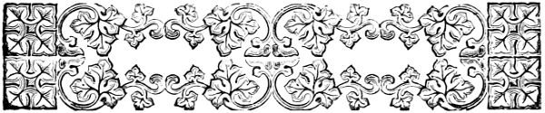
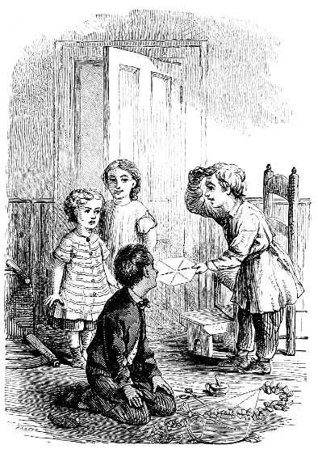

VIII .
THE NEW GLOVES .
`` M
aggie and Bessie , '' said mamma one morning , `` I want to see your gloves .
It is a month to-day since you began to save money for your library . ''
The gloves were soon brought , and mamma examined them .
`` Maggie , your second-best are too shabby to be worn any more , '' said her mother , `` you must take the better ones for every day , and I shall buy you a new pair . ''
`` Oh , mamma , I would rather keep the old pair , and save the money , '' said Maggie .
`` No , dear ; you know I told you I must keep you as neat and well dressed as usual .
You must have what is necessary , and then
what is left of the dollar goes in your box . ''
`` And how much will it take for new gloves , mamma ? ''
`` About seventy-five cents .
Then you have had two boot-laces ; they are ten cents ; that leaves fifteen cents out of the dollar .
Bessie 's gloves will do , I think , and she has had one boot-lace ; that leaves the whole of her dollar except five cents .
Maggie , you must have taken great pains to use fewer laces .
This is a great improvement on last month . ''
But in spite of her mother 's praise , Maggie 's face looked very long .
Bessie had almost the whole of her dollar , and but a few cents were left of her own .
`` Mamma , '' said Bessie , `` I think Maggie could not help it , if her second gloves are pretty mussed .
The other day Flossy yan away with them , and before we could get them
he had chewed one all up .
And it was not Maggie 's carelessness , 'cause Jane put them on the bed , and Flossy jumped up and pulled them off .
Could n't you take a little of my dollar to help to buy the new gloves , and let Maggie keep some more of hers ? ''
`` That will not do , '' said mamma , smiling at the generous little girl ; `` but since it was Flossy 's fault that the gloves were spoiled , and Maggie has taken so much pains , I will only take out fifty cents for the new pair .
And I will tell you , Bessie , it is much harder for Maggie to keep her things neat than it is for you , and then she generally puts on her own shoes , while nurse or Jane puts on yours .
Suppose next month I add another twenty-five cents to her dollar ; are you willing ? ''
`` Course I am , mamma .
I am just as glad as anything .
Is n't that nice , Maggie ? ''
Maggie 's face brightened .
`` And how much have we now , mamma ? '' she asked .
`` Forty cents out of Maggie 's dollar , and ninety-five from Bessie 's just make one dollar , thirty-five cents .
You have one dollar and twelve cents in your box , which make in all two dollars , forty-seven cents . ''
Maggie was quite happy when she found they had such a sum , which mamma told them was nearly half of what they wanted for the library .
Grandmamma 's carriage now drove to the door , and she came in and asked Mrs. Bradford to go out with her and take the children .
Mamma said she could not go herself , for baby was not well , and she did not care to leave her , but the children might go if grandmamma wished .
Away they ran to be dressed , full of glee , for shopping with grandmamma was a great pleasure , and they were almost
sure to come home richer than they went .
They drove to several places , and when the children thought there was anything interesting to be seen , they went into the store with their grandmother .
If not , they remained in the carriage , and chatted with the coachman , or watched the people passing in the street .
At last they went to a large store , where Mrs. Stanton and Mrs. Bradford were in the habit of going , and where Maggie and Bessie felt quite at home .
There was a good-natured clerk , who was nurse 's nephew , and whenever he saw them , he was sure to have an empty box with a picture cover , or a bright-colored piece of paper or ribbon to give them .
Here grandmamma bought several things which did not much interest the little girls ; but at last she took them to another counter , where she said something to the clerk about gloves .
`` Why , grandmamma , '' said Maggie , `` are you going to buy gloves ?
Do you know you have a whole box full at home ?
I saw them the other day when you let me put your drawer in order . ''
But Mrs. Stanton only smiled , and pinched Maggie 's round cheek , and just then the gloves were put before them .
Oh ! such gloves as those were never meant for grandmamma 's hand .
Kid gloves they were too , and who had ever seen any so small before ?
In her surprise and pleasure , Maggie had almost forgotten that she had been forbidden to handle anything when she went shopping ; but just as her hand touched the gloves , she remembered , and drew it back .
But the good-natured clerk gave them to her , telling her to look at them if she pleased .
`` Just like ladies ' gloves , '' said Bessie , who , stretching up on tiptoe , could just see above
the counter .
Grandmamma lifted her and seated her upon it .
`` Do you call that a hand ? '' said she , playfully , taking Bessie 's little fingers in her own .
`` Mr. Jones , have you a pair small enough for that ? ''
How Bessie wished her hand was larger as the clerk shook his head !
But after looking through the whole bundle , a pair was found which grandmamma thought would do , and then a pair for Maggie was picked out with less trouble .
They were wrapped in separate parcels , and each child took her own , feeling quite as if she must have grown taller since she came to that counter .
Then the clerk gave them each a piece of fancy paper , -- Maggie 's , gilt , with flowers stamped upon it , Bessie 's , blue , with silver stars .
As soon as they reached home , they ran to show mamma their treasures , but Mrs. Bradford
noticed that Maggie did not seem half so eager as usual , when she had received any new pleasure .
While Bessie was talking as fast as her little tongue could go , she stood almost silent at her mother 's knee , drawing her fingers slowly back and forth over her gilt paper .
`` What makes our Maggie so quiet ? ''
Mrs. Bradford asked .
`` Are you not pleased with your grandmother 's pretty present , dear ? ''
`` Oh , yes , mamma ! but I was just considering about it a little . ''
`` What were you considering ? ''
`` If it was quite fair for me to wear the gloves , mamma .
Do you think it is ? ''
`` Why should it not be fair , Maggie ?
Grandmamma gave you the gloves for your own ; did she not ? ''
`` Oh , yes , ma'am ; but then she did not know you gave me glove allowance ; and maybe
she would not have bought them for me if she had known .
And now you wont have to get me another pair this month .
So maybe you wont think I ought to have the gloves and the money too .
I want to be quite very fair , indeed , I do , mamma , and I did n't know how to think it was quite right .
Besides , those gloves are nicer than the kind you buy for us , and perhaps you would think you ought to take a little more of my dollar for them .
If you would , I would rather have a pair of the other kind , and put these away , and let the money go in the library-box . ''
`` You may wear the gloves and welcome , my dear , honest little girl , '' said Mrs. Bradford , drawing Maggie to her , and kissing her .
`` It is quite fair for you to do so .
Grandmamma knew that I gave you a certain sum for your gloves and so forth , and I think she meant to help you a little by buying these for
you .
I am glad my darling child wishes to be honest and upright in all she does .
But I must be quite fair too .
I told you I should give you so much a month , and take from it what you needed for gloves and shoe-laces , and whatever was left you might keep for another purpose .
Now since grandmamma has given you these , there is no need for me to buy you another pair ; but it would not be just for me to take from you any part of the money they would have cost .
It is
your
gain , not
mine
.
When a bargain has been made , we must hold to it , even though things turn out differently from what was expected . ''
`` But you need not hold to this bargain , if you do not wish to , mamma . ''
`` Indeed , I do wish to , Maggie , and you need not feel in the least troubled about it .
I am not only satisfied , but very glad that you have received this little help . ''
After this , Maggie 's mind was at rest , and she wore her new gloves with great pleasure .
`` Hallo ! '' said Fred , as he and Harry came into the library that afternoon , and found their little sisters quietly playing in one corner .
`` What scrumptious paper !
Where did you get that , Midget ? ''
`` Mr. Jones , nurse 's nephew , gave it to us , '' said Maggie .
`` He gave me the gold piece , and Bessie the silver piece , but we cut them in two and each took half . ''
`` I wish I could get hold of such friends as you do , '' said Fred .
`` Somebody is always giving you something .
How do you manage it ? ''
`` We do n't manage it , '' said Bessie , who thought that Fred meant to say that she and Maggie liked their friends for what they gave them .
`` We do n't manage it , and we do n't get hold of them , Fred .
Our friends give us
things because they like to do it , and we never ask for anything ; do we , Maggie ? ''
`` No , '' said Maggie , `` and you ought not to talk so , Fred . ''
`` I did n't mean to say anything , '' said he , `` but it is true ; is it not ?
Are not people always making you presents , and taking you to places , and doing other things to give you pleasure ? ''
`` Yes , '' said Maggie , `` but they do it because they like us .
If anybody loves anybody , it is a pleasure to do a favor to them .
We think it is ; do n't we , Bessie ? ''
`` Oh , that is it ; is it ? '' said Fred .
`` Well then , you love me ; do n't you ? ''
`` Course we do , because you 're our brother ; and we 'd love you a great deal more if you did n't tease us , Fred . ''
`` Well , if you love me , and it is such a pleasure to do things for people you love , you
can please yourselves very much by giving me some of this paper . ''
`` Oh , we ca n't ; we want it ourselves , '' said Maggie , while Bessie took up both pieces of paper , and put her hands behind her , as if she feared that Fred would run off with them .
`` Ho , ho , '' said he , `` then you love yourselves better than you do me ? ''
`` Fred , '' said Mr. Bradford , who was sitting on the other side of the room , `` do not tease your sisters . ''
`` I did not mean to tease them , sir ; but as Maggie thinks it so delightful to please people whom one loves , I was only giving her a chance to do it , and she do n't seem to care to take it .
I say , Hal , would n't this paper be jolly to make stars and things for our new kites ? ''
`` First-rate , '' said Harry .
`` I 'll tell you what , Midget and Bess , will you sell it ? ''
`` No , '' said Bessie , rather crossly , `` we want it for dresses for our paper dolls .
You do tease us , and we want you to go away , even if you say you do n't mean to , and you sha 'n' t -- '' Bessie stopped , and then went on again in a pleasanter voice .
`` Please to ` scuse me , Fred .
I did n't mean to be so cross , but we are so busy , and we 'd yather you would n't interyupt us . ''
These last words were said in a very polite little manner , which rather amused the boys .
Fred had been ready with a sharp answer , when Bessie began so angrily ; but now , when he saw her check her quick temper , he was ashamed to provoke her .
`` Just as you choose , '' he said , `` but you are in such a way in these days to lay up money for your mission-books that I thought you would be willing enough to sell it . ''
`` Children , '' said Mr. Bradford , again looking
up from his writing , `` if you can not play without disputing , I shall separate you .
Fred , your little sisters were quiet and happy before you came in .
Do not let me have to speak to you again , my boy . ''
Now here was the consequence of having a bad character .
Fred had not intended to vex the children , but he was so in the habit of teasing them that they were afraid of him , and thought he meant it when he did not ; while his father , who had not heard much of what was passing , but who had been disturbed by the fretful tone of Bessie 's voice , took it for granted that Fred was annoying her .
But Bessie was too honest to let him be blamed when he had not deserved it .
`` Fred was not naughty , papa , '' she said .
`` I 'm ` fraid it was me .
I was cross . ''
`` Very well , '' said her father , who thought it best to let them settle the difficulty themselves ,
if they could do it peaceably ; `` only let there be no more quarrelling . ''
`` Suppose we go and finish our kites , '' said Harry .
Fred agreed , and the two boys went away .
`` Bessie , '' said Maggie , presently , `` I 'm just of a good mind to give Harry a piece of my paper . ''
`` For some pennies ? '' asked Bessie .
`` No ; mamma said it was not nice for brothers and sisters to sell things to one another ; and she do n't want us to be too anxious to get money , even for our library .
I 'm just going to give it to him , 'cause that day when he asked me for the shell , I said I would sell it to him ; and then he 'll see I am not a miser . ''
`` Well , '' said Bessie , `` then I 'll give Fred a piece of mine , 'cause I was cross to him just now . ''
`` Harry shall have my gold piece , '' said Maggie , `` and then we 'll divide these two ` tween ourselves . ''
`` So we will , '' said Bessie , `` then we will all have some .
Maggie , you do fix everything so nice . ''
Away they ran to their brothers ' playroom .
`` Holloa ! '' said Fred , when he saw them ; `` we are not such plagues but that you had to run after us , eh ? ''
`` We came to bring you some of our paper , '' said Maggie .
`` This piece is for you , Harry , and Bessie 's is for Fred . ''
`` Well , you are first-rate little chaps , '' said Fred ; `` and Hal and I will make each of you a nice little kite ; see if we do n't . ''
`` Oh , Fred ! '' said Bessie .
`` What 's the matter now ?
Sha 'n' t you like that ? ''
`` Ladies are not chaps , '' said Bessie , gravely , `` and they do n't play with kites . ''
`` Oh , you 're a big lady , are n't you ? '' said he , laughing .
`` I can be a lady if I 'm not so very big .
Mamma says anybody can be a lady or a gemperlum , if they are kind and polite , even if they are very little , or even if they are poor . ''
`` All right , '' said Fred .
`` Then I suppose that lady wont accept a kite from this gemperlum . ''
`` Do n't say it that way ; you must say gem-per-lum . ''
`` Well , do n't I say gem-per-lum ? ''
`` That 's not the way , '' said Bessie , her color rising , for she knew that Fred was laughing at her , and she thought it was hard .
`` Fred , '' said Harry , `` you are breaking your resolution already . ''

Bessie in City . p. 184 .
`` That is so .
What a fellow I am ! ''
`` Fred , '' said Bessie , `` gemperlums do n't tease .
Papa is a gemperlum , and he never teases . ''
`` And mamma said Tom Norris was a perfect little gentleman , and he does not tease .
I guess gentlemen always ` do to others as they would , ' '' said Maggie , who was very fond of this line .
`` They ought to if they do not , '' said Harry , `` and no one can say that you do n't keep that rule , Maggie . ''
`` When people have angry passions , it 's very hard not to get in one when they 're teased , '' said Bessie .
`` Fred , I do have to try so very , very hard . ''
Fred threw down his kite , and caught his little sister in his arms .
`` See if I plague you any more then , '' he said .
`` I was just telling Harry I did not
mean to do it , and the first thing , I am at it again ; but I will try to remember , Bess .
Harry , if I forget again , I give you leave to bring me up short the best way you can . ''
Fred kept his word , and after this , took much pains to break himself of his provoking habit .
IX .
TWO LOST PETS .
 T
HAT night Maggie had a very bad earache .
She tried to be patient , but the pain was so severe that she could not help crying , and could get no rest .
Her father and mother were up with her almost all night , trying to give her ease ; but nothing did her any good until towards morning , when she fell into a troubled sleep .
T
HAT night Maggie had a very bad earache .
She tried to be patient , but the pain was so severe that she could not help crying , and could get no rest .
Her father and mother were up with her almost all night , trying to give her ease ; but nothing did her any good until towards morning , when she fell into a troubled sleep .
`` Margaret , '' said Mr. Bradford at the breakfast-table , `` is that committee coming here this morning ? ''
`` Yes , '' answered Mrs. Bradford .
`` Mamma , '' said Bessie , `` may I see it ? ''
`` See what , -- the committee ? ''
`` Yes 'm . ''
Mrs. Bradford smiled .
`` I do not think you would care much about it , Bessie , and the committee will be too busy with its own affairs to care to see you . ''
`` Why , is it alive ? '' asked Bessie , in great surprise .
`` To be sure , '' said Fred , before his mother could answer ; `` did you never see one ? ''
`` No , '' said Bessie , `` could it bite me or scratch me ? ''
`` It could if it had a mind to , '' said Fred , `` and -- '' He was stopped by Harry 's hand over his mouth .
Fred drew back his head , and looked angry .
`` You gave me leave , '' said Harry .
`` So I did , '' said Fred .
`` I beg your pardon , Bess , for plaguing you once more .
The committee wont hurt you ; it 's nothing but a lot of ladies . ''
`` You should beg your mother 's pardon ,
also , for answering a question addressed to her , '' said Mr. Bradford ; `` it is a rude thing to do .
Come to me , Bessie . ''
He took her upon his knee , saying , `` A committee is a number of people who are appointed to attend to some particular thing .
You know that the ladies in our church are going to make up some clothing to send to the children at the Five Points ' Mission ; do you not ? ''
`` Yes , papa . ''
`` Well , several of these ladies have been asked to make all the arrangements for the meetings , and to have everything in order , so that there may be no confusion when they come together to sew ; and they are called a committee .
Your mamma is one of the committee , and the ladies are to come here this morning .
Do you understand ? ''
`` Yes , papa . ''
It was quite late when Maggie awoke ,
long past breakfast-time , and after she was dressed , she found her breakfast arranged for her in the doll 's tea-set , and Bessie ready to wait upon her .
But our poor little Maggie could not enjoy even this very much ; she was languid and quite tired out with pain , and her troublesome ear would not let itself be forgotten , so that she did not feel much like play .
Mamma took her on her lap , rocked her , and read a new story-book , which suited much better .
`` I am sorry that I shall have to leave you for a while , dear , '' she said .
`` If I had known that I was to have a little sick girl this morning , I would not have asked the ladies to come here ; but as it is , I must go down .
I do not think I shall be away more than an hour , and you will be patient ; will you not ?
Nurse will take care of you . ''
`` And I will yead to her , '' said Bessie .
So when the ladies came , and mamma had to go down-stairs , she laid Maggie on the lounge and covered her up , while Bessie sat down close beside her with `` Very Little Tales , '' and `` Susie 's Six Birthdays . ''
Jane had taken Franky to the park , and nurse , seeing Maggie so quiet and comfortable , thought that she might leave her awhile .
`` Baby 's a bit fretful , '' she said , `` and it 's a shame to keep her in the house this pleasant day .
I 'll just take her on the sidewalk for a little fresh air .
I 'll not go out of sight , just up and down here a piece , and if Maggie wants anything , you can come down and call me , Bessie .
I know you are to be trusted not to get in mischief . ''
Bessie was rather proud of being left to take care of Maggie , and willingly agreed to let nurse go .
The house seemed very still after she had taken baby away .
Bessie heard nothing
but the sound of her own sweet little voice as she read `` Susie , '' and presently , looking up , she saw that Maggie was fast asleep .
Flossy lay on the foot of the lounge , rolled up into a round ball , but with his bright eyes wide open , watching Bessie .
He had been frisking about Maggie all the morning , trying to coax her to a game of play , but he found it was of no use .
He did not understand why his merry playmate should be so quiet , nor did he approve of it .
But he could not help it , and so , like a wise dog , he seemed to have made up his mind to bear it , though he lay watching and listening for the least sign of better times .
Bessie laid down her book , and sat looking at Maggie .
`` My poor Maggie , '' she said to herself , `` she 's so good and patient .
I wish I could do something for her , and I wish Aunt Annie or somebody would come
and see us and tell her a story while mamma is down-stairs .
Oh , I wish Colonel Yush would come ; he tells us better stories than any one .
Would n't it be nice if he was to come while Maggie is asleep ? and then she 'd see him when she wakes up , and she 'd be so glad .
If he knew she was sick , I 'm sure he would come .
I 'll just go out on the sidewalk and ask nursey if she wont take me over to the hotel door , and then I 'll go up to my soldier 's room and ask him to come and see Maggie . ''
She rose up softly from her chair and went into the nursery , followed by Flossy , who , being very wide awake himself , had no mind to be left with the sleeping Maggie , and jumped down from the lounge to run after Bessie as soon as she stirred .
Bessie went to the closet and took down her garden-hat and sack from the peg where they hung .
The hat was
very shabby , for it had been worn all summer at the sea-shore , and had seen some hard use in the garden since she came home .
But she could not reach her best one , and said to herself that this would do , if nurse would only let her wear it , of which she was not at all sure .
She put it on , walked down-stairs , and out upon the front stoop ; but she saw no sign of nurse .
Up and down the street she looked , but the old woman was nowhere to be seen .
Now the truth was , that nurse had not intended to lose sight of the front-door , but as she passed Mr. Hall 's house , Miss Carrie was at the basement window , and calling her , begged that she would bring the baby and let her speak to her .
Nurse , always proud to show off her pet , was willing enough , and for a few moments quite forgot her other nurslings , as well as the open front-door ; and it
was just during these few moments that Bessie came out to look for her .
`` Nurse said she would n't go far away , '' said Bessie to herself , `` and she has , and now I ca n't go and find the colonel , 'cause mamma would n't like me to go alone . ''
Flossy had run down to the foot of the steps , and there he stood , wagging his tail , whisking and frisking , and altogether behaving like a puppy who had quite taken leave of his senses , so glad was he to be out of doors .
`` We ca n't go , Flossy , '' said Bessie , as , with a sigh , she turned to go into the house .
`` We 're very disappointed , but we must mind mamma .
Come , Flossy , come .
Do n't you leave me , Flossy . ''
But Flossy was not so obedient as his little mistress , and instead of coming back , he ran a short distance up the street , and then stopped , barking joyously , and looking back
to see if she were following .
Bessie went down the steps , calling him over and over again in such a coaxing voice , that it was strange even such a wilful doggie could resist .
But it was of no use .
Away went Flossy as fast as he could run , and frightened at the thought of losing her pet , and forgetting everything else , away went Bessie after him .
Up to the end of the block , around the corner , and so down the other side of the square , till they came to the long , crowded crossing , over which Bessie was never allowed to go without some grown person to hold her hand .
Over it went Flossy , in and out among the carriages and omnibuses , escaping the wheels and the horses ' hoofs in a way that was quite wonderful to see , until he reached the opposite corner , where he again waited for Bessie .
But poor Bessie dared not cross by herself , and stood still in great trouble .
`` I wish I was over at the hotel , '' she said to herself , as she looked up at the great building opposite , `` and then the colonel would take me home . ''
There was generally a tall policeman on the corner , whom Bessie knew quite well , for he had often taken her hand , and led her over , or sometimes even carried her if the stones were wet ; but now he was not there .
In his place was another , who was a stranger to her , and now he came over to her corner Bessie went up to him .
`` Will you please tell me where my policeman is , sir ? '' she said .
`` Who is your policeman ? '' said the officer .
`` I do n't know his name , but he takes me over the crossing , and mamma do n't ` low me to go alone . ''
`` I suppose I can take you over as well as another , '' said he ; `` but your mother must
be a queer one to allow you to go out alone at all . ''
`` She did n't , '' said Bessie , `` and I did n't mean to , but Flossy yan away , and I went to get him .
Please take me over ; I am afraid somebody will catch him ; then I 'll go to the colonel 's yoom , and he 'll take me home . ''
The policeman lifted her up , and carried her to the opposite sidewalk .
Flossy was off again as soon as he saw her near him , but the officer ran after him , and soon had him safe in Bessie 's arms .
`` And what are you going to do now ? '' said the good-natured man .
`` You 're over small for running about the streets by yourself . ''
`` I am going to the colonel 's , '' said Bessie .
`` I know the way , and he 'll take care of me . ''
She thanked him , and ran off ; but the
policeman followed till he saw her go into the hotel as if she were quite sure of her way .
`` She 's all right , '' he said to himself , and then went back to his post , thinking no more about the little stray lamb whom he had only helped into farther trouble .
Bessie found her way without difficulty to the colonel 's room , and seeing the door open , she peeped in .
There was no one there but a servant-woman , who was dusting .
`` Where is my soldier ? '' asked Bessie .
`` Your soldier ? '' said the woman .
`` If you mean the lame gentleman , he and the lady have gone out to ride .
I do n't want you here bothering round with your dogs .
Go back to your own rooms ; '' for the woman supposed Bessie to be some child who belonged in the hotel .
`` My soldier lets me come in his yoom when I choose , and it is n't yours to talk about , ''
said Bessie , very much offended , and she walked away with her head very straight .
What should she do now ?
She would go back to the corner , she thought , and ask her friend , the policeman , to take her home .
But she was becoming a little confused and frightened with all her troubles , and when she left the hotel , turned the wrong way .
On she went , farther and farther from home , though she did not know it , and expected every moment to see the well-known crossing .
Some few people turned and looked at her , as she passed with her dog clasped in her arms ; but she did not act at all like a lost child , and it was easy enough to think that she was some little girl playing about her home and perhaps watched by loving eyes .
At last she came near a broad avenue , where the cars were passing up and down , and then she knew she was not on her way home .
But
just then she heard music , and her eye was caught by a new sight .
Quite a crowd was gathered upon the sidewalk , where were two men , one with a hand-organ , the other with a table on which little figures of gayly-dressed men and women were spinning around .
Bessie stopped to look , standing back from the crowd ; but three or four rough boys who were hanging about took notice of her and her dog .
Presently they came up to her .
`` Whose dog is that ? '' asked one .
`` Mine and Maggie 's , '' said Bessie .
`` You give him to me , and I 'll give you this , '' said the boy taking a large red apple from his pocket .
`` I ca n't even if I wanted to , '' said Bessie , '' 'cause he 's half Maggie 's . ''
`` Well , you give me your half , and Maggie 's will run after it . ''
`` No , '' said the little girl .
`` I would n't
give you my Flossy for fifty seventeen apples ; '' and she walked away , but the boys followed .
`` Where did you get so much hat ? '' said one .
`` It is not much , '' said Bessie .
`` It is old and torn , 'cause I carried peach-pits and stones in it .
Mamma is going to give it away . ''
`` I do n't know who 'd thank her for it , '' said another .
`` I guess your ma spent all her money on your frock , and left none for your hat . ''
`` She did n't , '' said Bessie , angrily ; `` she has plenty left . ''
`` She 's right stingy , then , to give you such a hat ; it 's only fit for the gutter , so here goes ! '' and the rude boy twitched off the unlucky hat , and sent it flying into the middle of the street , where a car passed over it .
Bessie did
not care much about her hat , but she was frightened and displeased .
`` You are very yude , '' she said , `` and I wont walk by you .
You sha 'n' t talk so about my mamma . ''
`` Maybe we 'll walk by you though , '' said the boy , and they kept by her side for a few steps farther , when suddenly , with a loud yelp of pain , Flossy sprang from her arms , for one of the boys had pinched his tail so as to hurt him very much .
The boys shouted , Flossy ran , they after him , and the next moment one of them caught him up , and they all disappeared with him round the corner .
Bessie ran on a few steps and then stood still , crying loudly with terror and distress .
Several persons immediately stopped , asking her what ailed her , and if she were lost ; but she only called , `` Oh , Flossy , Flossy ! oh , mamma ! oh , Maggie . ''
Among the people who stopped , was an old lady , who looked at Bessie through her spectacles in rather a severe manner , and as she asked questions in a quick , sharp way , the little girl felt afraid of her , and would not answer .
Poor lost baby !
There she stood , bareheaded , with the wind blowing her curls , her tiny hands over her face , crying so pitifully that some of those who stood by felt as if they must cry with her , but still no one could get a word from her .
But presently a policeman came by , and Bessie , looking up , saw him and was a little comforted ; for though he , too , was a stranger , she felt somehow as if every policeman was a friend ; and she ceased her loud cries , though her sobs still came heavy and fast .
`` Here 's a lost child , '' said one of the crowd .
`` Please take me home , sir , '' said Bessie , stretching out her hands to him .
The tall officer was pleased , and , stooping , lifted the little creature in his arms .
`` Where do you belong ? '' he asked , kindly .
`` In mamma 's house , '' said Bessie .
`` And where is mamma ? ''
`` In a committee , '' answered the child .
`` Humph ! '' said the old lady , who stood close at the policeman 's side , `` in a committee , with a parcel of other foolish women , I suppose , while her babies go running wild about the streets .
She 'd better attend to her own affairs . ''
`` She had n't , '' said Bessie , who thought every one had something to say against her own dear mother , -- `` she had n't , and you are naughty to say that .
She 's a nice , pretty lady , and better than anybody , and not a bit foolish ; and , oh , I do want her so , I do want her so ! '' and she began to cry afresh .
`` There then , never mind ! '' said the policeman ;
`` we 'll find her pretty soon .
Ca n't you tell me where you live ? ''
Bessie had long since been taught this , but now , in her fright and distress , she quite forgot the street and number of the house , and only shook her head .
`` Tell me your name then , '' said the man .
`` Bessie -- Yush -- Byad-ford , '' sobbed the child .
`` Brightford -- Brightford , '' repeated the policeman .
`` Does any one here know any people of the name of Brightford ? ''
Poor little Bessie !
Between her sobs and the difficulty of pronouncing her r 's , the officer had quite mistaken the name , and no one answered .
`` You 'll have to take her to the station-house , '' said the old lady .
`` Oh , no , Mr. Policeman !
I 'm not to be taken up , -- indeed , I 'm not , '' said Bessie .
`` I
was n't naughty , and mamma wont say so , only Flossy yan away , and the colonel was n't in his yoom , and I ca n't find my street . ''
`` Poor baby ! '' said the policeman , as he felt her trembling in his arms .
`` Nobody shall hurt you , my child ; but if your people miss you , they will send up to the station , and if I take you there , they will find you right off .
You ca n't tell where your mamma lives , hey ? ''
`` I sha 'n' t talk about my mamma , '' said Bessie ; `` everybody says naughty things about her ; but I want to go to her , and please find Flossy , Mr. Policeman . ''
`` Who is Flossy ? '' asked he .
`` He 's her dog , I guess , '' said a boy who stood by .
`` Four big fellows ran away with him .
I se'ed 'em . They cut up the alley , and down by the back lots .
I guess you must cotch 'em in a hurry , or see no more of the pup . ''
`` Do n't you believe that , '' said the policeman , as Bessie 's tears and sobs came faster than ever .
`` We 'll find him for you one of these days ; but now I must see you safe ; '' and he moved on with the little girl in his arms .
`` Do you think some one will come and find me pretty soon ? '' she asked .
`` To be sure they will .
Have you a papa ? ''
`` Yes , sir . ''
`` Then you be sure when he finds you are gone , he 'll come right off to the station-house to see if you are there .
Why , the other day I picked up a little chap in the street not nigh as big as you .
He could scarce walk , and could n't speak a word plain , and there , when I got him to the station , was his mother waiting for him . ''
So the officer talked on kindly and pleasantly ,
till Bessie was a little comforted , and when they reached the station , looked eagerly round to see if any of her own friends were there awaiting her .
But no , there was no one there yet , only several policemen were sitting or standing about , to one of whom Bessie 's protector spoke , telling him where he had found her .
`` And now I am going back to my beat , '' he said to the child , `` and if any one comes that way looking for you , I 'll send them right up here . ''
Bessie 's lip began to tremble once more .
She had been terribly disappointed to find that no one was waiting for her ; and now here was her new friend going away , and leaving her with these strangers .
`` Do n't you cry any more , '' said the second policeman , taking her from the arms of the first .
`` Why , those brown eyes of yours are
almost washed out .
Come along with me , and see me send off a telegraph message to the other stations to say you 're here . ''
`` I could n't help crying , '' said the little girl .
`` I had so many troubles to-day . ''
`` Bless your heart ! '' said the sergeant .
`` You shall tell me all about them presently .
Why , you are just about the size of my Jenny , and I would n't like to see her looking that way . ''
When the policeman spoke of telling him her troubles , it came into Bessie 's mind that she had not told them to her Father in heaven , and covering her face with her little hands , she whispered , `` Dear Father in heaven , please let my own home father come and find me very soon , 'cause I 'm so tired , and I want my own mamma ; and do n't let those naughty boys hurt my Flossy , and let papa find him too . ''
The officer heard the low , soft whisper so close to his ear , though she had not meant he should .
`` Bless her ! '' he said to himself , `` I guess her father 'll be brought along pretty soon after that . ''
Bessie was now quite interested in watching the working of the telegraph wires which were put in motion to carry the message that a stray child was to be found at this station .
One of the men who had gone out came back , bringing her a cake and an apple , but though it was long past her usual dinner hour , she could not eat .
`` Now , '' said the sergeant , sitting down and putting her upon his knee , `` let us hear all about those troubles of yours ; '' for the kind man thought if he could make her talk of herself , he might find out where she belonged .
X.
HOME AGAIN !
HOME AGAIN !
 M
EANWHILE the stray birdling had been missed from the home-nest , and great was the trouble and alarm there .
Nurse , coming in , found Maggie at the head of the stairs with a discontented face .
M
EANWHILE the stray birdling had been missed from the home-nest , and great was the trouble and alarm there .
Nurse , coming in , found Maggie at the head of the stairs with a discontented face .
`` What 's happened ye ? '' she asked ; `` and what are ye standing here in the draught for ?
Go back to the nursery , my honey . ''
`` I ca n't find Bessie , '' said Maggie .
`` I went to sleep , and when I woke up , she was gone , and Flossy was gone too , and I looked all over , and they are not here . ''
`` She has n't taken wings , and flown away , '' said nurse .
`` You mind baby a moment , and I 'll hunt her up for you . ''
Nurse hunted in vain , and at last told Maggie she thought Bessie must have found her way into the parlor , where the ladies were talking .
`` She 'll soon tire of it , and come back to you , '' she said ; `` but it was not like her to go off and leave you . ''
But the time passed on ; Jane came in with Franky ; the children 's dinner-bell rang , and still Bessie did not come .
At last the ladies of the committee went away , and mamma came out of the parlor , but no little girl was with her .
Then the whole house was searched , up-stairs and down , from cellar to attic ; but the pet was not found .
`` Could her grandmamma or aunt or Mrs. Rush have come and taken her out ? '' said Jane .
`` They would not be so thoughtless ; they would know I should be anxious if they left no
word , '' said Mrs. Bradford , who was growing very much alarmed .
`` No one came in ; for I did not have my eyes off the front-door while I was out on the sidewalk , '' said nurse .
`` Yes , I did , too , just a couple of minutes while I spoke to Miss Hall ; but no one could have come in and gone out , too , without my seeing them . ''
Ah , nurse , nurse , it was just those two minutes when you forgot your duty , which did all the mischief .
`` And there 's her hat , '' said Jane , looking in the box .
`` Ah , there 's her garden hat and sack gone .
Now maybe she 's just run out after you , nurse , and somebody 's caught her and run away with her when you was n't looking .
I 've heard of such things , and how they make 'em beg , and beat 'em and frighten 'em so they do n't dare tell where they belong . ''
This was very pleasant for the poor anxious
mother , who , however , told Jane that was nonsense ; while nurse , who knew she was to blame in letting her attention be called off , grew very angry and scolded Jane , saying she must have seen Bessie if she left the house .
Nevertheless , Bessie was certainly not in the house ; and one servant was sent to grandmamma 's , another to the hotel , to see if any trace could be found of the missing treasure ; while Mrs. Bradford herself ran to all the neighbors , and poor Maggie stood by the window crying bitterly for her lost sister .
In a little time grandmamma and Aunt Annie were on the spot , as anxious as the rest , to see if they could help in the search .
As people were running in all directions , it seemed to grandmamma that the best thing she could do was to comfort poor , distressed Maggie .
But Maggie was not to be comforted , and declared that she knew she should never , never , never see Bessie
again .
`` Oh , I am so very sorry I went to sleep , '' she sobbed .
`` I just expect she went to heaven in a chariot of fire when no one was looking . ''
Grandmamma could not smile at Maggie 's strange idea , she was so anxious herself , but she told her this could not be so ; and that Bessie had probably run out in the street and so lost her way .
`` But Bessie would not do such a thing , grandmamma ; she would know mamma would not like it , and she never disobeys her . ''
`` Perhaps your mother never told her she was not to go out alone , dear , and so she was tempted to run a few steps , and then could not find her way back . ''
`` Oh , no , indeed , grandmamma .
Bessie knew quite well mamma would not wish us to go alone even if she did not say so ; and she would think it was just the same ; and Bessie never falls into temptation except about passions .
If it was me , maybe I might ; and I know she 'll never come back ; and oh , I can not do without her , we are so very intimate , grandmamma . ''
Grandmamma said she was almost sure Bessie would soon be found , and told Maggie how well everything was arranged at the police-stations , so that if a little child was lost , it could soon be restored to its friends .
Still Maggie only shook her head sorrowfully , feeling it quite impossible to believe that Bessie had gone away of her own free will .
Then Mrs. Bradford came in , looking very pale and troubled , for she could hear nothing of her lost baby ; but a moment after , Patrick came with news .
The policeman at the corner told how he had helped a little girl over the crossing , and seen her safe in the hotel and that she had said she was going to see the colonel ; but that he could tell nothing farther .
Patrick had gone to the colonel 's rooms , but they were closed and locked ; and he heard that the colonel and Mrs. Rush had been out for a long while .
Hearing this , Mrs. Bradford and her sister went round to the hotel , and giving the alarm , the great building was searched from top to bottom .
Every room and closet , every hall and corridor , even the roof , and the cellar far underground where the gas was made , were looked through ; but still no Bessie .
But when the servants were questioned , the woman who had spoken to Bessie told how she had come to the colonel 's room , and then walked off .
`` She has probably wandered out again , madam , '' was said to the pale mother by one of the gentlemen who had been helping in the search ; `` and now you had better at once send to the police-station , and give notice of her loss . ''
As Mrs. Bradford was leaving the hotel to do this , the colonel and Mrs. Rush drove up .
In two minutes they had heard all that was known , and the colonel said he would himself go to the station .
The station to which Bessie had been taken was not the one nearest to Mr. Bradford 's house ; and it was to the latter that the colonel drove first .
He did not find his lost pet there , of course ; but he heard that a telegram had come sometime since , saying that a stray child was at the station in -- -- Street , and there he went as fast as his horse 's feet could carry him .
We left the little girl who had caused all this commotion sitting upon the knee of the kind sergeant of police , while he coaxed her to tell him the story of her troubles , in the hope that he might find out where she belonged .
`` You do n't look big enough for such a many troubles , '' he said ; `` now let 's hear about them , and see what we can do .
What was the first one ? ''
`` First Maggie had a earache and cried ; and then mamma had a committee , and had to leave us ; and then I could not find nurse , and Flossy yan away , '' said Bessie ; and the poor child began to cry again at the thought of Flossy .
`` And who is Flossy ? '' asked the sergeant .
`` He is our puppy that Donald gave us , -- Maggie 's and mine . ''
`` And who is Maggie ? ''
`` My own sister ; do n't you know that ? ''
`` Indeed , I did not , '' said the policeman .
`` What is her name ? ''
`` Maggie Stanton Byadford , '' said the child .
`` And what is yours ? ''
`` Bessie Yush Byadford . ''
The policeman shook his head ; still he could make nothing of the name .
`` And when Flossy ran away , you ran after him , did you ? '' he asked .
`` Yes , but I did n't mean to , sir ; I forgot mamma would n't want me to , and Flossy yan so fast .
He went ` way over the long crossing , and our policeman was not there . ''
`` Who 's your policeman ? ''
`` I do n't know his name , only he helps us over the long crossing , when we want to go to the hotel . ''
`` Ho , ho , I think we are coming at it , '' said the sergeant .
`` What hotel is that ? ''
`` Why , the hotel where the colonel lives , '' said Bessie , as if there could be but one hotel and one colonel .
`` I thought mamma would not like me to go home by myself , and I asked that other policeman whom I did not know to take me over , so I could go ask the colonel to
send me home .
But he was out , and a woman scolded me , and so I went away , and the crossing would n't come , and the boys were naughty and yude , and Flossy 's gone -- oh , dear ! oh , dear !
I do want my own house and my own mamma ; and everybody said naughty things about mamma . ''
`` There , then , do n't cry any more , '' said the policeman .
`` I think that must be the hotel , and you ca n't tell me what street you live in ? ''
`` Why , yes , I can , '' said Bessie , who quite forgot that she had not been able to tell where she lived while she had been so frightened .
`` I live in papa 's house in -- -- Street , Number -- -- , and I want to go home so much . ''
`` So you shall , right off , now that you have told me where you belong , '' said the policeman .
`` I 'll send , and see if you are right . ''
But just as he turned to speak to one of
the men , an open carriage drove quickly to the door .
Bessie looked around , then gave a scream of joy .
`` Oh , it 's my soldier , my own dear soldier !
He came and found me -- oh , he did , he did ! ''
In less time than it would have been thought possible , the colonel had been helped out , and was within the room .
Bessie almost sprang out of the policeman 's arms , and clung about the colonel 's neck , while he , dropping one crutch , steadied himself on the other , and held her fast with the arm that was free .
It was touching to see , as , half laughing , half crying , she poured out broken words of love and joy , now covering his face with kisses , now burying her own on his shoulder , then lifting it again to lay her soft cheek to his and pat it with her tiny hand .
Colonel Rush was almost as much overjoyed as she , but he was in haste to carry the recovered treasure to her
anxious mother .
Nor was Bessie in less haste to be at home ; but for all that , she did not forget to speak her thanks to those who had been kind to her , going from one to another , and shaking hands with them in her own polite little way .
The sergeant carried her out and put her in the carriage .
`` Good-by , '' she said , giving him her hand , `` I am very much obliged to you for letting me come in your nice station-house , and for speaking so kind to me . ''
`` Bless your heart , '' said the man , `` if it was n't for your own sake , I 'd be sorry enough to part with you .
Now do n't you go and lose yourself again . ''
`` I did not lose myself , '' said Bessie ; `` I just came lost , I did not mean to do it . ''
`` I do n't believe you did , '' said the man ; `` good-by to you . ''
Then the colonel put something into his
hand , and they drove home as fast as possible .
Oh , what joy there was over the little darling who had been so long away !
Mamma held her fast and cried over her ; it seemed as if she could never let her go out of her arms again ; Maggie jumped about and clapped her hands , and kissed Bessie 's face , hands , dress , and even her feet ; Franky did as he saw Maggie do , saying , `` Bessie tome , all nice now . ''
Grandmamma , Aunt Annie , and Mrs. Rush were quite as much rejoiced , and the very servants had to take part in the welcome .
Even the new cook , whom the children scarcely knew , had to come in for a peep at the dear little cause of all this excitement .
Then papa , who had been sent for , that he might help in the search for his lost daughter , came home to find the sorrowing changed into rejoicing , and Bessie running to the front-door to meet him , saying , --
`` I am quite found papa .
I asked our Father to let you find me , and he sent the colonel instead , but that was just as good when he brought me home ; was n't it ? ''
`` Quite as good , perhaps even better , darling , since dear mamma was spared another hour of anxiety , and you one of waiting .
Our heavenly Father often does better for us than we ask , although we may not always know it . ''
`` And you do n't think I was naughty ; do you , papa ?
Mamma does not . ''
`` I must hear the story first ; but now let me thank our good , kind colonel , who has put himself to some trouble I am sure , to find you . ''
When Mr. Bradford had heard Bessie 's story , which she told in her own straightforward way , he satisfied her by saying that he did not think her in the least naughty , since
he was sure she had not meant to disobey .
He would not consent that grandmamma and Aunt Annie , and Colonel and Mrs. Rush should go home to dinner ; they must all stay and have a great jubilee over the happy ending to Bessie 's adventures .
And oh , such a pleasure !
The children were allowed to take dinner with the grown people , a treat which was only granted on great occasions .
`` It 's just like the man in the Bible , who lost his sheep and found it , and called all his friends to come and be glad , and have a nice time with him , '' said Maggie , `` only we 're a great deal more glad than that man , because our Bessie is a great deal better than the sheep , and we do n't have ninety and nine , either . ''
`` No , '' said papa , `` we have only one Bessie and one Maggie , and a very good Maggie and Bessie they are of their kind .
I would not
change them for any others that could be offered to me .
How is the ear , Maggie ? ''
`` Oh , it 's ` most well , papa .
When I felt so bad about Bessie , I forgot about it , and when I was so glad , the pain just went away before I knew it . ''
`` So the greater trouble cured the lesser , eh ? ''
`` But , papa , '' said Bessie , `` we have a great , great trouble with all our happiness .
You know Flossy is quite lost , and we 'll never have him to play with again . ''
`` I am not sure about that , '' said Mr. Bradford ; `` I shall go to-morrow and see what I can do to find him .
Still I have not much hope , and you must not think too much about it . ''
`` You mean you will do all you can , papa , '' said Bessie , sorrowfully , `` but probaly we will never see our dear Flossy again . ''
`` Never mind , Bessie , '' said Maggie , tenderly ; `` it is not very much matter if we do n't .
We have you back again , so we 've no reason to complain . ''
Dear , generous-hearted little Maggie !
She would not say how badly she felt about Flossy , lest Bessie should think she blamed her for his loss , but it was a great trial to her , as her father knew .
She was more fond of him than Bessie was , and Flossy cared more for her than he did for any one else .
Never were two merrier playfellows , and their droll antics and frolics were a source of great amusement to the whole family .
And now he was gone , perhaps never to come back ; and Maggie 's little heart was very sore , though she said nothing of her grief .
Thoughtless she often was , but never where Bessie was concerned ; she never forgot her little sister 's happiness or comfort , and would bear anything herself if so
she might keep harm or trouble from Bessie .
Her father knew this , and why she spoke as if she did not care much about Flossy , and he loved her the better for it , for he saw that it was hard work for her to keep back the tears .
He put his arm about her , and kissed her tenderly , as he began to talk of other things .
Quite late that night , when Mrs. Bradford went up-stairs , she heard a low sobbing from the room opening out of her own , where Maggie and Bessie slept , each in her own pretty little bed .
`` What is it , my darling ? '' she asked , going in .
`` Is your ear feeling badly again ? ''
`` Not so very , mamma , '' said Maggie , `` but -- please put your head down close , mamma , so Bessie wont wake up -- I do feel so very , very badly about Flossy .
If I knew somebody had him who would be kind to him , I think I could try to bear it , but I know they will hurt
him and tease him , and he 'll have such a hard time .
I know he 'll be homesick , too -- oh , dear -- and I ca n't go to sleep , 'cause I think so much about him , and I do n't want Bessie to know it . ''
Mamma sat down on the bed and comforted Maggie , and then , holding her hand , began to tell her a story which she took care not to make too interesting , until presently the little hand which held her own loosened its grasp , and Maggie 's regular breathing showed that she had forgotten her trouble .
All this made Mr. Bradford resolve that he would spare no pains to recover Flossy , and the next morning he went to the police-station , and asking the name and beat of the man who had brought in his little daughter , went in search of him .
He was soon found , and told where he had met Bessie ; but he had been able to learn nothing of the lost dog .
Mr. Bradford inquired all about the neighborhood in vain ; the boys whom he met either could not or would not answer his questions .
He offered a reward to whoever could tell anything that would lead to the recovery of the dog , and when he went down town , put an advertisement in the papers saying the same thing .
But three days passed , and still no word came of Flossy .
On the fourth morning , the family were all at breakfast , when Patrick , who was passing through the hall , heard a scratching and whining at the front-door .
He hurried to open it , and Flossy rushed in , ran through the hall into the breakfast-room , and before any one had recovered from their first surprise , scrambled into Maggie 's lap , buried his face under her arm , and lay trembling and whimpering with joy .
Poor little fellow ! he was in a sad state .
His glossy silken coat was
all matted and dirty ; he looked thin and half-starved ; his pretty red collar , with its brass lettering , was gone , and around his neck the hair was rubbed off , as if it had been worn by a rope , and his mouth was cut and bleeding .
Papa said he thought he had been tied up , and in his struggles to free himself , had worn the hair from his neck , and cut his mouth with gnawing at the rope .
The children cried and laughed over him by turns , hugged and kissed him , and although it was against mamma 's rules to feed him in the dining-room , begged that they might do it for this once .
Permission was given , and then they wanted to stuff him with everything that was on the table ; but mamma said they must be careful , or he would be sick , so a saucer of warm bread and milk was brought and put on the hearth , and
glad enough the poor puppy was to have it .
But he would not eat unless Maggie 's hand was on him , and every now and then he would stop to look up in her face with a low whine , as if he wanted to tell her his pitiful story .
Afterwards he was well washed , and then , wrapped in his blanket , went to sleep in Maggie 's lap .
He woke up quite refreshed , but for a day or two , did not care to play much , content to lie most of the time in Maggie 's or Bessie 's arms , or curled up in a ball in some comfortable corner .
But after this long rest , and several good meals , to say nothing of a great amount of petting , he began to bark and act like himself , and was once more the bright , merry , affectionate plaything he had been before .
Where he had been , or how he had escaped from those who had treated him so cruelly ,
was never known , but every one thought it quite wonderful that so young a dog , and one who had been such a short time in the house , could have found his way home alone .